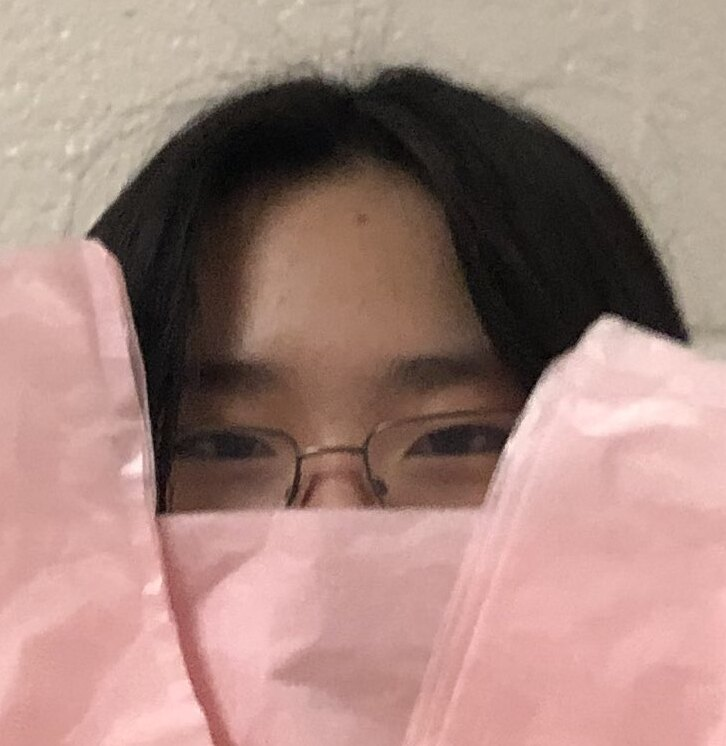
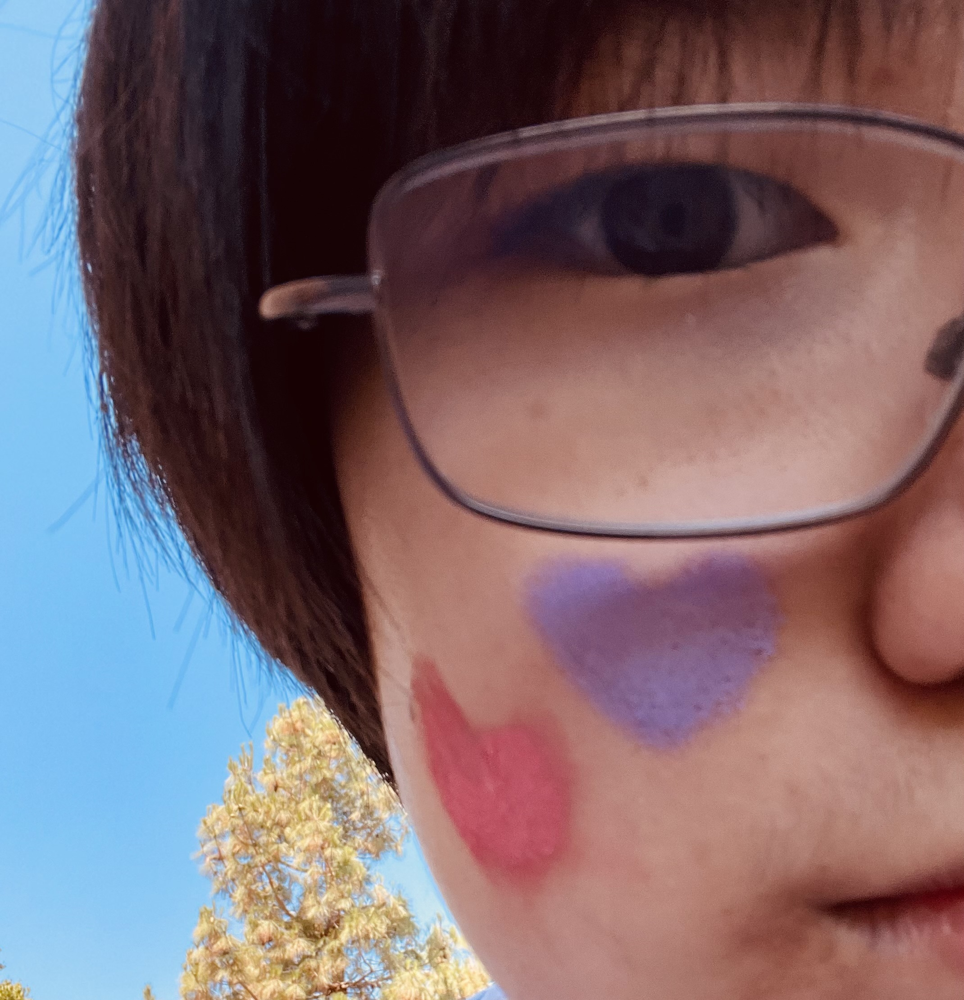
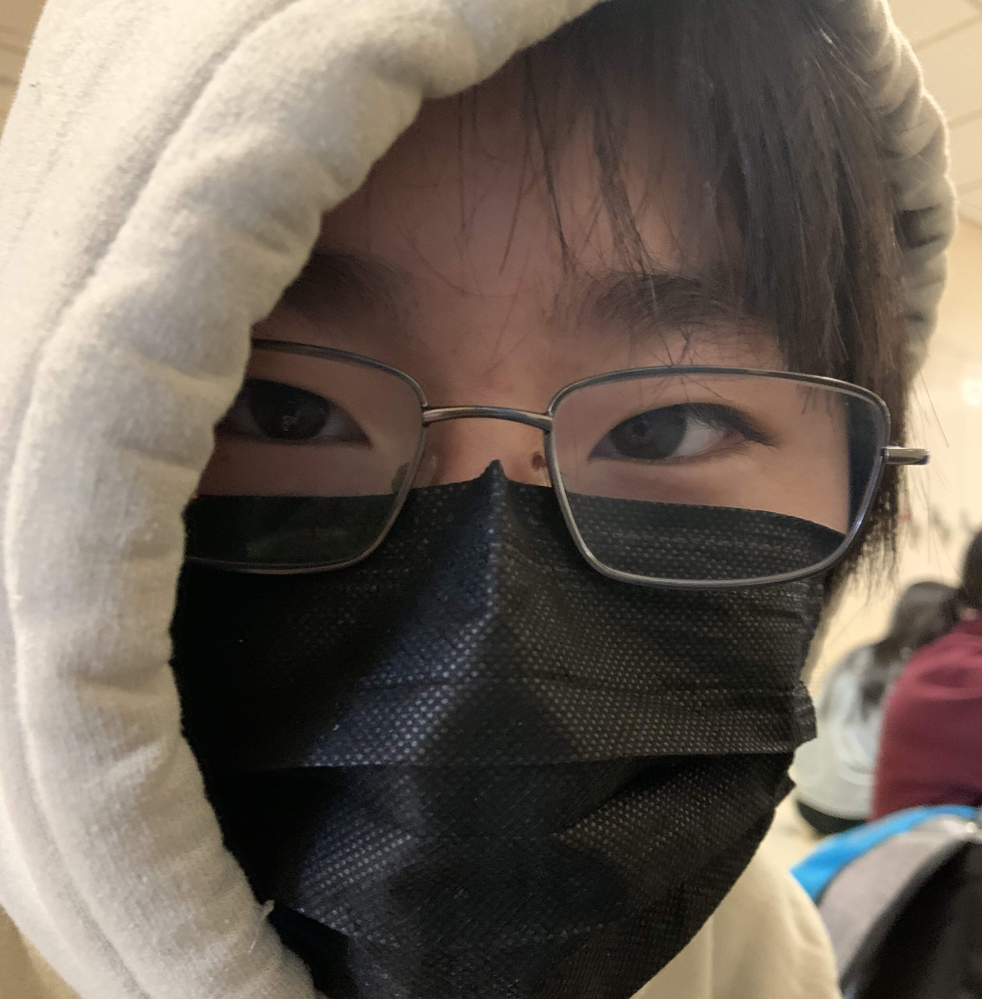

Meirl


My name is Tsz Fei Wang. I am a grade 10 student at William Lyon Mackenzie CI.
I live with my mom. I like cute animals and bubble tea.
Interests
My interests include sleeping, playing violin, and stuff.
Community involvement
I'm concertmaster in the Mackenzie String Ensemble, an amazing ensemble that meets every Tuesday after school to rehearse. Additionally, I'm the HOSA trainer for Nutrition, so I prepare people for the Nutrition category at SLC.
Other community involvements include Cybersecurity club, Math club, the percussion section at Wind Symphony.